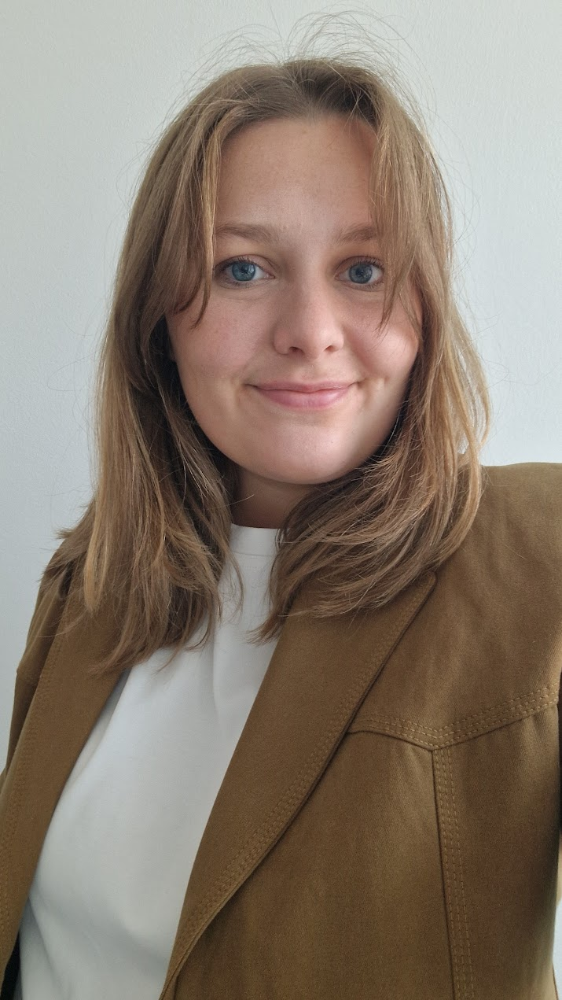

Alexandra Bruncrona
Doctoral researcher · TUM · AGAPP–TUS7AGP
I research and teach at the Professorship for Algorithmic Governance and Public Policy at the Technical University of Munich.
CV in brief
For my doctoral thesis, I study policy narratives using NLP and apply critical futures studies to explore energy transitions.
Before pursuing a doctorate, I worked as a policy and market expert in the renewable energy field.
I have a BSc (Tech.) in Environmental and Energy Engineering and an MSc (Tech.) in Advanced Energy Solutions from Aalto University, Finland, as well as a BA in Linguistics – minoring in History and Digital Humanities – from the University of Helsinki, Finland, and a PGCert in Narrative Futures from the University of Edinburgh, United Kingdom.